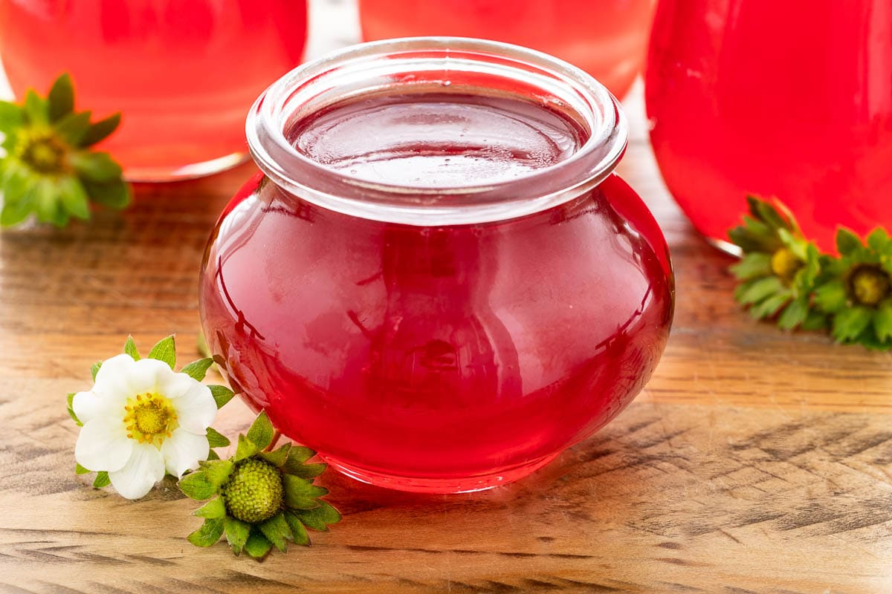

Odin Recipes
Strawberry Jam

A sweet, perfect go-to recipe for jam you can put on snacks and eat all you want!
Ingredients
Lemon juice
How to make Strawberry Jelly
- Wash the strawberries well and cut them in small pieces
- Put the strawberries on a wide pan, as well as the sugar, and heat it up
- Pour the lemon juice and sugar as you like, but don't overdo the sugar!
- Don't let it burn, keep stirring until it's consistent and the jam starts getting thick enough: twist the pan around and see if it doesn't roam around as easily
- When it reaches the right point, pour it on a jar and just cool it off for a few minutes before trying it out yourself! Voilá, strawberry jam!
Go back to Odin Recipes' Homepage to find more recipes like this one!
This website is made by MagNyx as an exercise for TheOdinProject!
Thank you for stopping by!